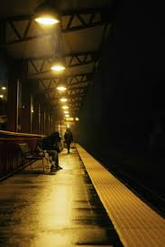

You don't text anyone. It feels easier than explaining how unsure you suddenly feel. You don't wanna lose aura.
Your phone stays quiet. No one is watching your dot. It's just you and the platform.
The sign still says delayed.
A stranger nearby tilts their head. “Trains are a mess tonight. I know a faster way.”